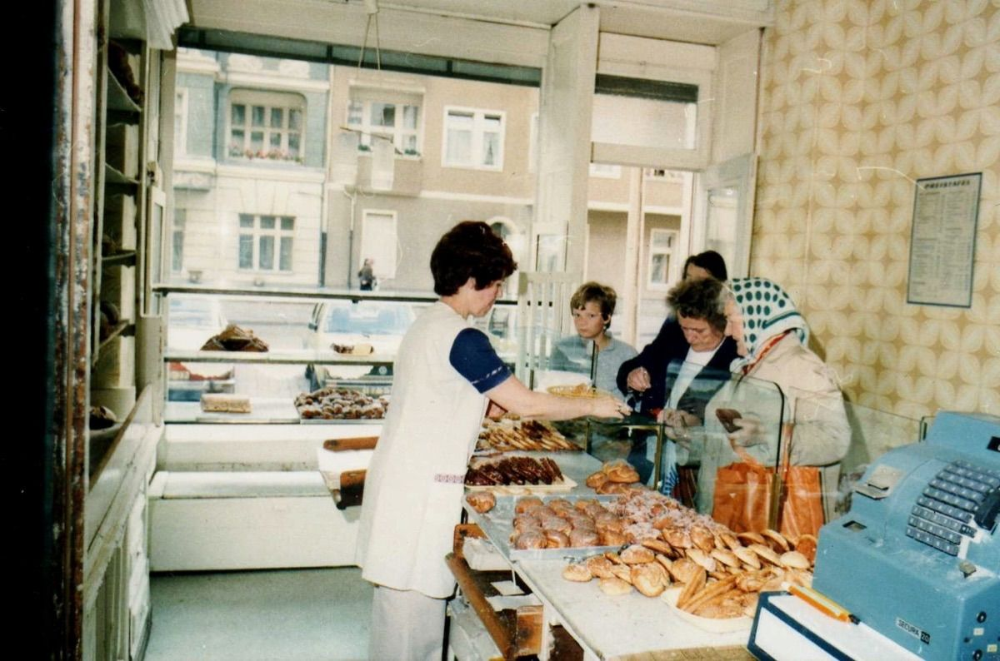
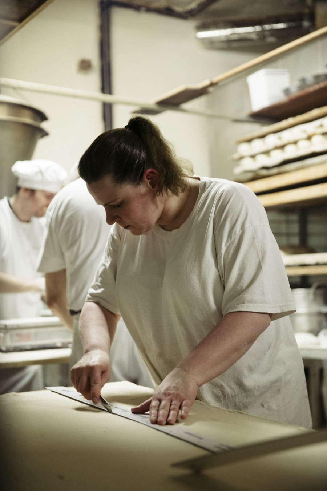
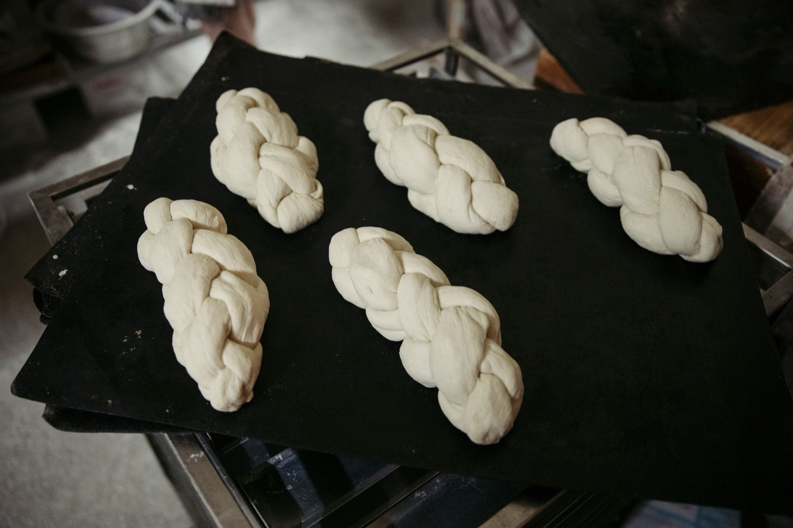

Geschichte
Seit 1906 hinter derselben Ladentür
Fünf Generationen Familie Siebert. Eine Adresse: Schönfließer Straße 12, Prenzlauer Berg.
Der Ort
Immer Schönfließer Straße 12
Gustav Siebert kam aus Schönfließ in Ostpreußen und eröffnete 1906 in der Schönfließer Straße. Seitdem ist die Bäckerei nie umgezogen und nie unterbrochen worden. Der heutige Konditorraum war damals das Wohnzimmer der Familie: Großeltern und drei Kinder schliefen neben den Arbeitsgeräten.

Die Familie
Von Gustav bis Anke: fünf Generationen
Der Gründer aus Schönfließ in Ostpreußen. Er baut das Haus in der Schönfließer Straße auf.
Führt die Bäckerei durch Inflation und zwei Weltkriege.
Hält das Handwerk gegen die Mangelwirtschaft. Butter, Rosinen und Mandeln sind Mangelware.
Retter der Ost-Schrippe. Der Brötchenteig ruht drei Stunden, der Brotteig über Nacht. Bis 2021.
Fünfte Generation, mit Ulrich Kienzl. Die Rezepte bleiben, die Kasse wird bargeldlos.


Auszeichnungen
Die Wände hängen voller Urkunden
DER FEINSCHMECKER zählt die Bäckerei immer wieder zu den besten Bäckern Deutschlands, unter anderem 2013 und 2017. Die Bäckerinnung Berlin verlieh mehrfach die Goldene Brezel. Im Mai 2026 wählten die Berliner das Roggenmischbrot zum Publikumsliebling der ersten öffentlichen Brotwahl.
Das Jubiläum
2026 wird dieses Haus 120. Ein Goldenes Ticket ist noch im Lostopf.
Der Verkauf der Jubiläumsgutscheine lief bis Ende Juli. Jetzt wird gezogen: von August bis September jede Woche 120 Preise, im Oktober der Hauptpreis, das Goldene Ticket. Es bedeutet ein Leben lang an jedem Öffnungstag Backwaren bis 10 Euro gratis.
Die offizielle Bekanntgabe läuft über Instagram und Facebook. Hier führen wir alle gezogenen Nummern gesammelt auf.
Am besten probieren Sie selbst
Frisch schmeckt man am besten
Di–Fr 6:00–18:30 · Sa bis 13:30. Schönfließer Straße 12 im Prenzlauer Berg.